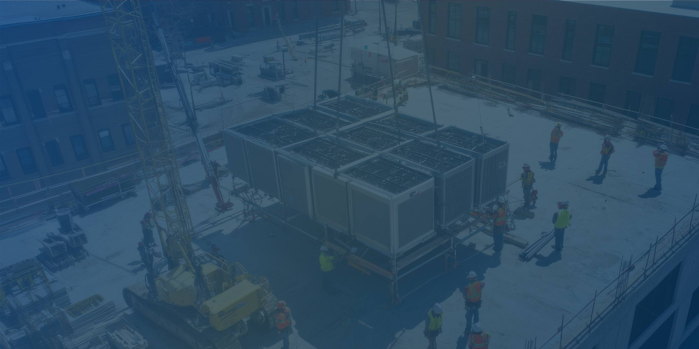
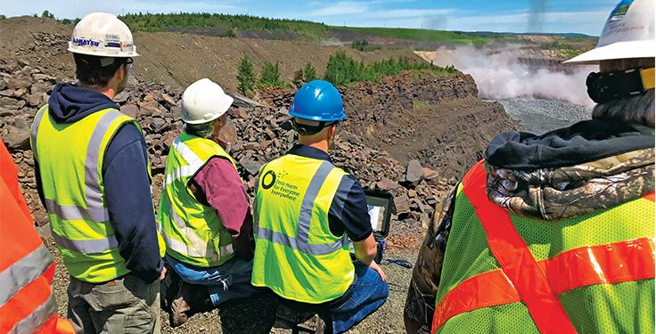
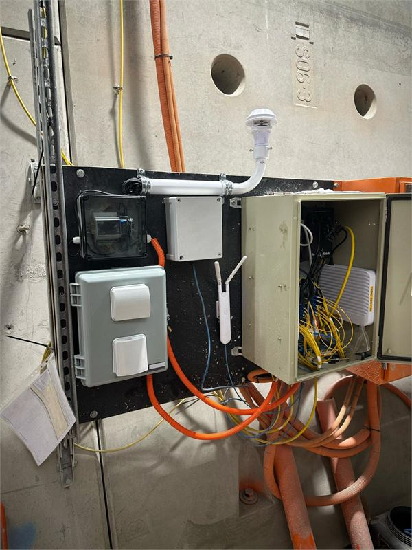
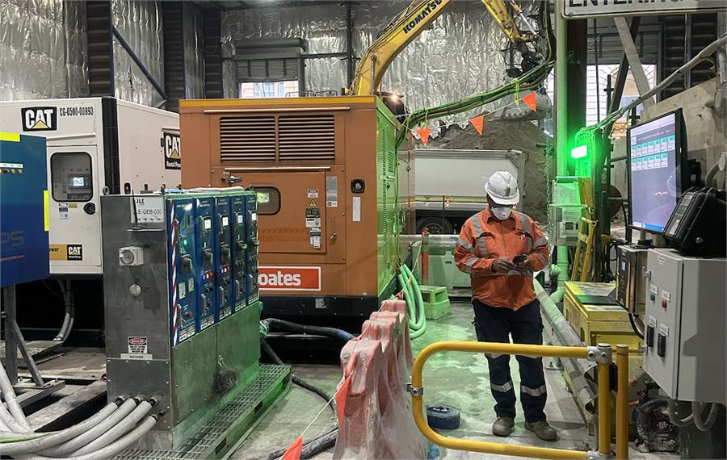
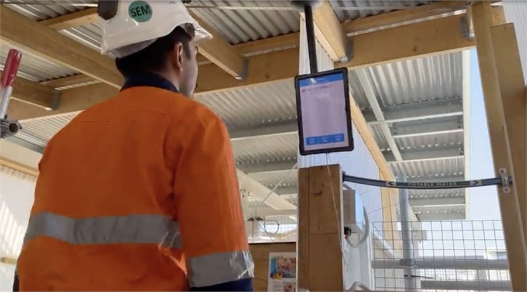
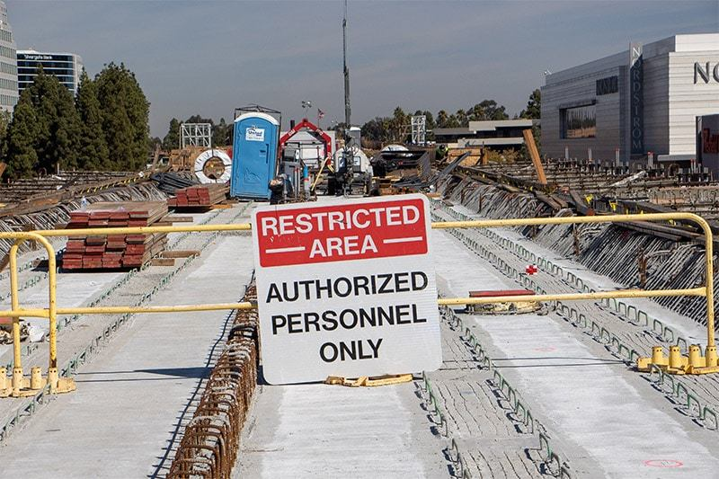
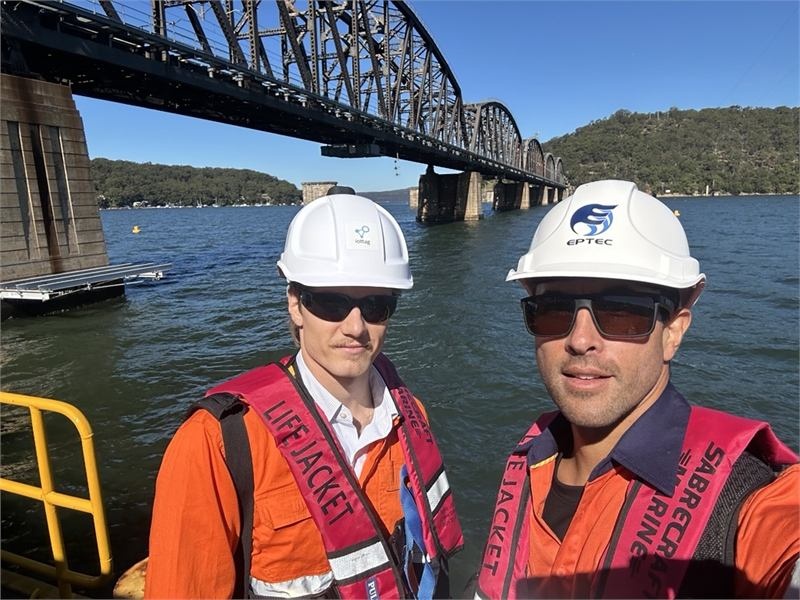

Construction
Construction & infrastructure
operational intelligence
Creating Greater Visibility Across Complex Project Environments
Construction projects involve hundreds of moving parts.
Maintaining visibility across these interactions is critical to improving safety, coordination and project performance.
iottag helps construction and infrastructure organisations create a live operational understanding of their projects through Operational Intelligence.
Understanding project activity in real time
The Operational Digital Twin creates a shared operational environment that combines workforce activity, equipment,
fleet movement and environmental conditions into a live operational view.
This helps project teams understand:
Improving workforce accountability
Understanding who is on site and where they are operating is critical to effective project delivery.
The platform supports:

Workforce accountability

Access control

Contractor management

Emergency response

Restricted areas

Operational awareness

Supporting safer projects
Fatal Risk Intelligence helps organisations understand changing operational conditions and identify areas where exposure may be increasing.
By understanding operational conditions earlier, project teams can respond proactively and support safer project environments.
Supporting project performance
Construction performance is influenced by multiple operational factors.
Production Intelligence helps organisations understand these relationships and improve project performance.
Visibility for project leadership
Operational Analytics & Benchmarking provides visibility across projects, contractors and operational environments.
This supports:
Operational intelligence for construction & infrastructure
Improve visibility, coordination and project performance across your operations.